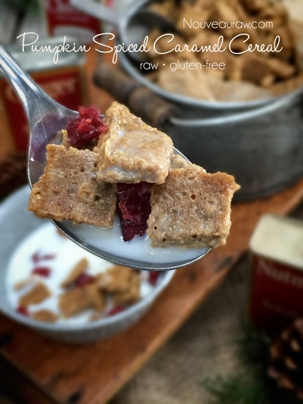
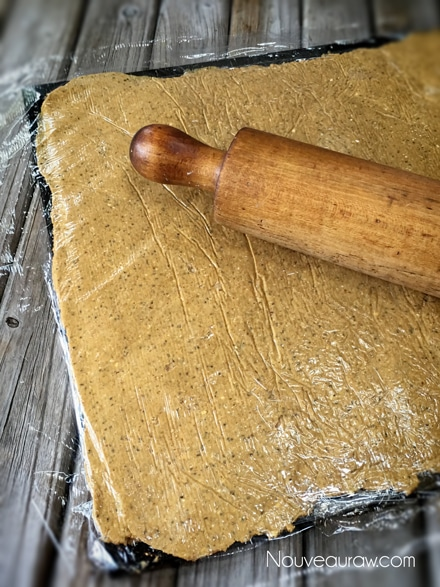
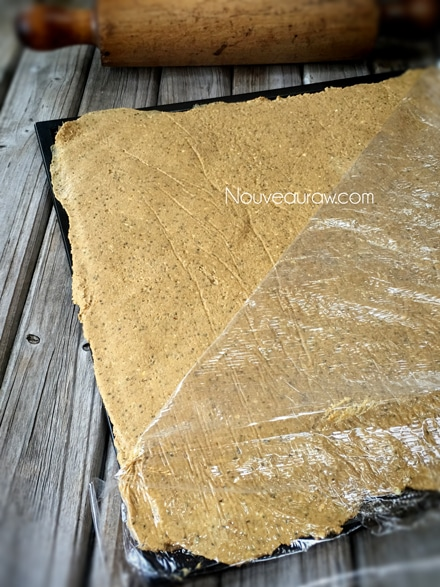
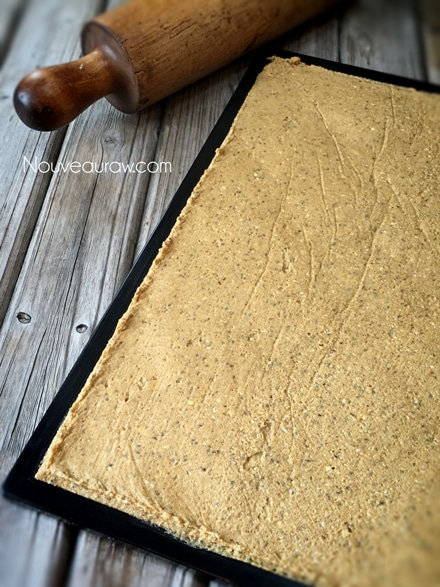
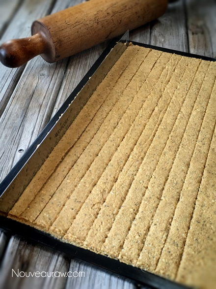
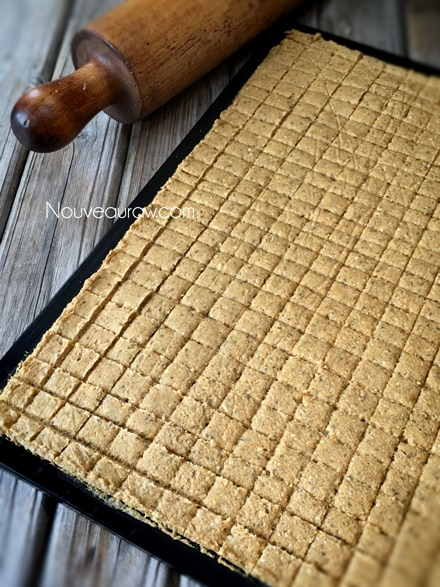
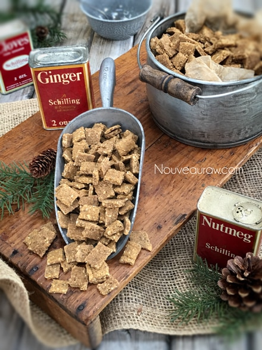

Pumpkin Spiced Caramel Cereal

~ raw, vegan, gluten-free, nut-free ~
If you are anything like me, you opened this posting, and immediately scanned the ingredient list. Then you scrolled back up to see what words of wisdom I had to impart. (haha)
One might be wondering why I have the word caramel in the recipe title when you clearly don’t see the ingredients that make up caramel, no caramel flavoring, no caramel coloring, so how does caramel come into play in this recipe? Dates are the answer… dates are a great dried fruit that provides a caramel flavor in recipes.
If you want to make this recipe completely nut-free, you can replace the almond meal with fresh ground buckwheat, or even ground rolled oats. Once I made the batter and tasted it, I had one of those OMG moments… hmm, I seem to have those quite often don’t I?
But seriously, I am always amazed as to how great raw foods taste in their raw form. In the cooking world, you can’t always taste test the food in its raw form; the magic happens after it is cooked. But with raw, the magic happens right away. So instantly, I knew this recipe could be enjoyed in several forms; as a cereal, as a cracker, broken into crumbles, and tossed into your granola or in trail mixes. It would even be a wonderful topping for raw cobblers and ice cream. Having recipes like this are real-time savers and allow you to get very creative.
I served this cereal with raw coconut milk instead of the typical nut milk. All the wonderful flavors were quite complimentary with one another. I also sprinkled some dried cranberries on top which added another layer of texture and flavor. I did do a test on the cereal to see how long it takes to takes to get soggy and after 20 minutes, while sampling it every 5 minutes (I set a timer), it was all gone.
BUT I will tell you that it stood up to sitting in the coconut milk for 20 minutes, and it still had a crunch in the center. Another thing that I loved about this cereal was is that I didn’t add any sweeteners! Outside of the natural sweetness of the banana and dates, it remains pure and refined sugar-free! I so love that.
One batch of the Pumpkin Caramel Cereal makes approximately 10 ~ 1/2 cup servings or 20 ~ 1/4 cup servings. Keep in mind, as with most raw foods, it is a lot more filling than standard processed cereal, so it takes much less to fill you up. I always snickered at the serving sizes on commercial cereal boxes. On the side of the box, it usually indicates a serving size of 3/4 cup. On average an ordinary person typically eats one bowl of cereal at a sitting.
Doesn’t sound so bad, does it? But… and there is always a but, over time our bowls and plates are more often than not, super-sized. So, in the end, we end up eating 2-4 servings per sitting. Sure boxed cereals may appear to be less expensive at first glance, but when you think about what I just said, and that they are processed, garbage-filled, high-sugared, low-nutritional value… they are not such a good deal after all. Just saying…
 Ingredients:
Ingredients:
Yields 4 1/2 cups
Dry Ingredients:
Wet Ingredients:
- 2 cups raw buckwheat, soaked, sprouted
- 1 cup pumpkin puree, canned or fresh
- 1 cup Medjool dates, pitted
- 1 ripe banana
- 1/2 tsp maple flavoring
Preparation:
- In a food processor fitted with the “S” blade, pulse together the tiger nut flour or almond meal, coconut, chia seeds, pumpkin spice, and salt. Pulse together, so the spices get evenly distributed.
- If you use tiger nut flour, add 2 Tbsp melted coconut oil since it is low in fat and can be “drying” to this recipe.
- Add buckwheat, pumpkin, dates, banana, and maple flavoring. Process until it is a smooth paste.
- If the dates are hard and dry, rehydrate them by soaking them for 15 minutes in enough warm water to cover them.
- Drain and hand-squeeze the excess water from the dates before adding.
- If the batter is too thick and sticky, add 2 Tbsp of water, adding more as needed. Do not make this batter soupy. Just moist enough for the blade to easily move through the batter.
- If you want the appearance and feel of texture, you can hand stir in the buckwheat. I have made it both ways, and both are good, just a personal performance.
- Spread the batter edge to edge on the teflex sheet that comes with the dehydrator.
- I use the Excalibur 9 tray dehydrator which comes with nice large square trays.
- I used a rolling pin to make sure the batter is evenly spread out. First cover with plastic wrap, then lightly roll flat and even. This will make for nice looking cereal pieces and help them all dry at the same time.
- Score the batter into the desired bite-size pieces. I used an 8” metal ruler to make my score marks.
- Dehydrate at 145 degrees (F) for 1 hour, then reduce to 115 degrees for around 16 hours or until dry. It won’t dry completely crispy.
- Halfway through, flip cereal over to remove the teflex sheet. This will allow air to move freely over both sides, speeding up the drying process.
- To do this, place a mesh sheet on top of the cereal, then follow with another dehydrator tray. Flip over, remove the dehydrator tray, mesh sheet, and peel off the teflex sheet.
- Store in airtight containers on the counter for 1-2 weeks or freeze for 1-2 months.
The Institute of Culinary Ingredients™
- Dates are an amazing ingredient for raw food recipes, click (here) to read why.
- What is Himalayan pink salt and does it really matter? Click (here) to read more about it.
- Is coconut butter the same as coconut oil? Click (here) to find out.
- New to Tiger Nut Flour? Read a bit more about it (here).
- To make your own Pumpkin Spice, combine 4 tsp cinnamon, 2 tsp ground ginger, 1 tsp Allspice, 1 tsp nutmeg.
Culinary Explanations:
- Why do I start the dehydrator at 145 degrees (F)? Click (here) to learn the reason behind this.
- When working with fresh ingredients, it is important to taste test as you build a recipe. Learn why (here).
- Don’t own a dehydrator? Learn how to use your oven (here). I do however truly believe that it is a worthwhile investment. Click (here) to learn what I use.






© AmieSue.com